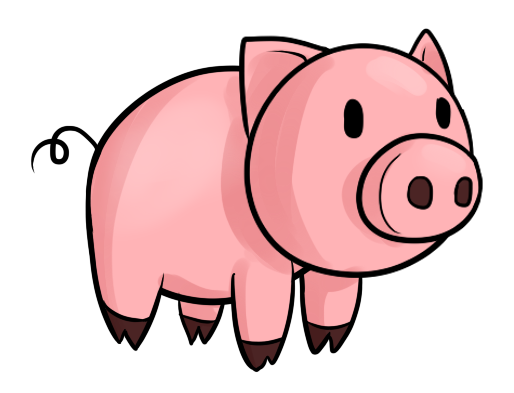

Weeks of Fonts
This page is a project that is part of my Turing journey to explore pairing two fonts each week and using them to express a quote.
WK 3
Everything in MODERATION,
including MODERATION.
Oscar Wilde
Open Sans || Vollkorn
WK 2
Well I could do that,
but I won’t because I’m not an animal, 
and I don’t hate myself.
Open Sans || Vollkorn
WK 1
When tempted to fight fire with fire,
remember
that the Fire Department usually uses
water.
Lato || Unna